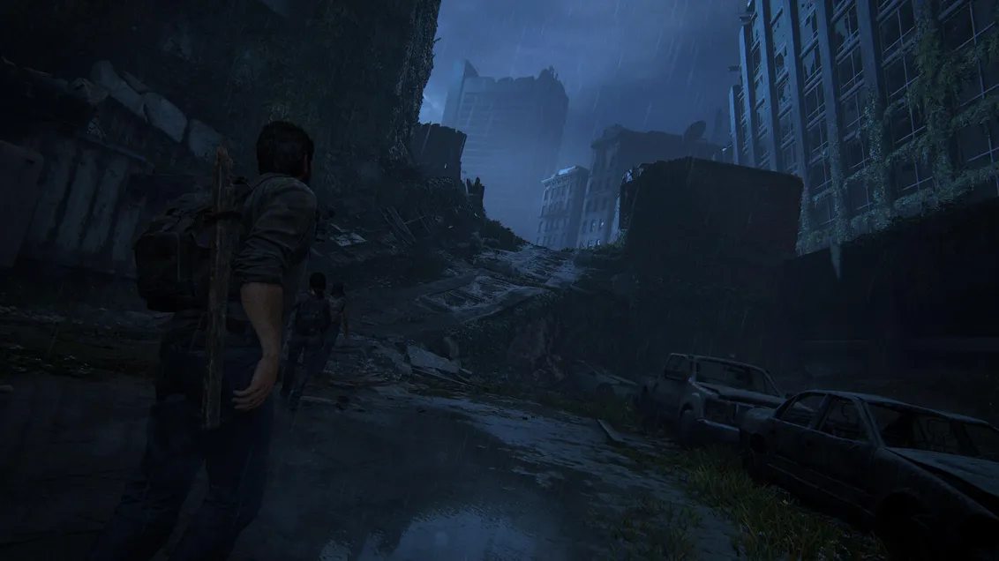

Why this is my favorite game: The Last of Us resonates with me because it's not just about fungus or monsters. It's about people and relationships. I remember a moment when Joel and Ellie connect, and it shows how trust and care can matter even when everything feels hopeless. I also like how the story makes you think about right and wrong. The soundtrack by Gustavo Santaolalla feels sad but comforting, and it matches the mood of the game. The best part is that the world feels real. In abandoned houses, you can find small signs of someone's life, like drawings or notes, and it makes you wonder what they went through. Even though the world is dark, there are also small funny moments, like Ellie's jokes and the giraffe scene, that bring light into the story. That's why I made this tribute: to honor the game and share the feelings that last after it's over.
